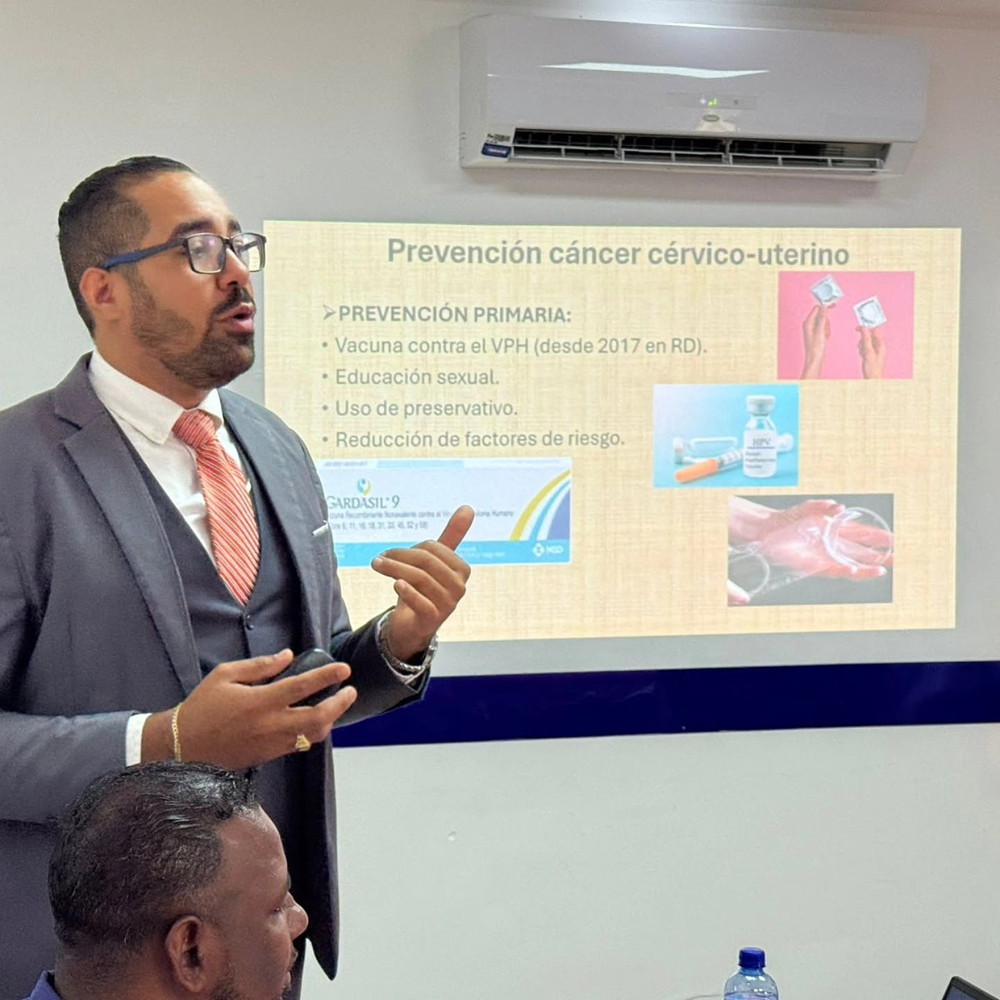

Medicina preventiva
- Chequeos médicos generales.
- Evaluaciones preventivas.
- Orientación sobre vacunación.
Servicios médicos
Estos servicios están organizados para responder a necesidades frecuentes de pacientes y familias.
Educación para la salud
Actividades educativas sobre prevención del VPH, hábitos saludables, control de riesgos y bienestar familiar.
